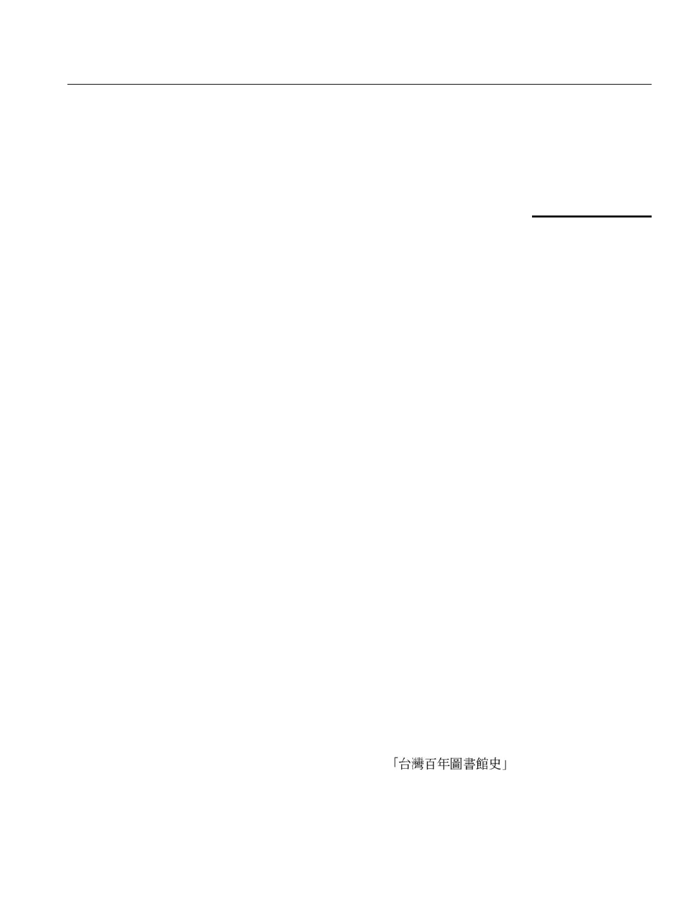

Developing a Taiwan library
history digital library with reader
knowledge archiving and sharing
mechanisms based on the DSpace
platform
Chih-Ming Chen and Yong-Ting Chen
Graduate Institute of Library, Information and Archival Studies,
National Chengchi University, Wenshan District, Taipei City, Taiwan
Chin-Ming Hong
Department of Applied Electronics Technology,
National Taiwan Normal University, Taipei, Taiwan
Chin-Wen Liao
Department of Industrial Education and Technology,
National Changhua University of Education, Changhua City, Taiwan, and
Chia-Meng Huang
ADLINK Technology Inc., Taipei, Taiwan
Abstract
Purpose – This work seeks to present a reading annotation and knowledge sharing tool, which can
annotate a web page with HTML format archived by the Taiwan libraries’ history digital library
based on Web 2.0 technologies
Design/methodology/appro ach – This work adopted DSpace, an open-source institutional
repository system, to implement a Taiwan Digital Library History Library with the reading
annotation tool for knowledge archiving and sharing services. A quasi-experimental design method
was employed to randomly assign participants to an experimental group and control group to evaluate
differences in the reading performance of learners who used the proposed annotation system. A
statistical analysis scheme was employed to evaluate differences in learning performance of learners
while reading and learning with the proposed annotation tool.
Findings – The paper finds that annotated digital material provides useful knowledge to readers. The
values to those annotating and subsequent readers are the acquisition of in-depth knowledge and efficient
reading. Additionally, the effect on digital libraries is that digital library content grows dynamically as
readers contribute knowledge. More importantly, annotated information from different readers has very
high potential for the discovery of value-added knowledge utilizing data mining techniques.
Originality/value – Collecting user-generated content is a novel research issue in the library sciences
field, and few studies have developed useful tools that allow readers to actively contribute their
knowledge to digital libraries. This work shows how to implement such digital library systems and how
the annotation tool benefits the growth of digital archives and promotes learning performance.
Keywords Digital libraries, Annotation, DSpace, Knowledge archiving, Knowledge sharing,
Knowledge management, Taiwan
Paper type Technical paper
The current issue and full text archive of this journal is available at
www.emeraldinsight.com/0264-0473.htm
EL
30,3
426
Received May 2010
Revised September 2010
Accepted September 2010
The Electronic Library
Vol. 30 No. 3, 2012
pp. 426-442
q Emerald Group Publishing Limited
0264-0473
DOI 10.1108/02640471211241681
1. Introduction
Libraries are important institutions that preserve human culture. Beginning in the
1990s, the Internet has contributed markedly to the development of digital libraries
(DLs). Some predict that DLs will be the predominant libraries in the future. Library
and education professionals have recently become actively involved in DL research
and development. Many DL projects (e.g. American Memory of the Library of
Congress (http://memory.loc.gov/ammem/index.html) and the Digital Archives
Project of National Taiwan University (www.darc.ntu.edu.tw/)) focused on
preserving human cultural heritage, historical relics, and institutional productions.
However, few DL projects have focused on preserving library history. Taiwan’s
library history can be divided into the following four periods: the Japanese
occupation period (1895-1945); the reconstruction period (1945-1952); the growth
period (1953-1976), and the rapid growth period (1977-present). Many historical
events are valuable and should be collected in a DL to support teaching and
academic research in the library and information field. This work developed a DL
for Taiwan libraries’ history to preserve the developmental history of Taiwan’s
libraries by modifying the open-source DSpace platform.
2. Background
Digital libraries are focused on creating, organizing, and managing multimedia digital
content and collections, and providing search, retrieval, and other information services
over computer networks. Currently, some open-source software packages (Goh et al.,
2006; Jody, 2007), such as Eprints, Fedora, Greenstone, GERN CDSware, and DSpace,
are available to organizations and individuals to create DLs. Open-source DLs are
increasingly considered a beneficial alternative to commercial DL systems due to user
dissatisfaction with the functionalities of commercial DL systems and the increasing
budget cuts libraries now face. Additionally, the costs of maintenance and producing
software are also increasing dramatically. Free access and a good level of functionality
are the main reasons accounting for the usage and interest in open-source DL software.
Goh et al. (2006) developed a checklist consisting of 12 criteria for evaluating
open-source DL software. The 12 features that characterize “good” open-source DL
software are effective content management and content acquisition, the existence
metadata, search support, adequate access control and privacy, report and inquiry
capabilities, preservation of digital content, interoperability, a user-friendly interface,
standards compliance, effective automated tools, and good support and maintenance.
Although Goh et al. (2006) evaluated four open-source DL software programs –
Eprints, Fedora, Greenstone, and GERN CDSware – their study did not analyze
DSpace (www.DSpace.org). The first version of DSpace was released in November
2002, following a joint effort by developers from Massachusetts Institute of
Technology (MIT) and Hewlett-Packard (HP) Labs in Cambridge, Massachusetts.
Notably, DSpace has powerful functionalities that are characteristics of a good DL, as
identified by Goh et al. (2006) in their study of archiving, retrieval, and management of
digital assets. DSpace is currently used as a basis for institutional repositories (Tansley
et al., 2003).
Although DSpace has sufficient functionalities for archiving, searching, and
managing digital content, the predefined metadata schema needs to be revised to
archive digital targets, such as library history in Taiwan. Additionally, the user
Developing a
library history
427
interface in DSpace for browsing digital content is very primitive and clearly cannot
satisfy user needs. More importantly, the original DSpace system lacks an interface for
exhibiting various digital objects, such as images, video, audio, and animation.
Moreover, collecting content for DLs is the most important and difficult step in
developing rich digital content. Recently, Web 2.0 technologies have enable the
contribution of user-generated content to DLs and developing new applications with
Web 2.0 technologies in a library setting is becoming an important research issue.
Curran et al. (2007) noted that user-generated content, as opposed to content posted
solely by site author(s), and treating users as co-developers of a site are features of Web
2.0 websites. Wikipedia is the most well-known site for user-generated content.
Wikipedia, the largest multilingual free encyclopedia on the Internet, allows any user
to add content, and all content can be edited by any other user. The principles of Web
2.0 that are applicable to DLs are interactivity and the possibility for users to
contribute content. Many studies have indicated that users can create additional
information to digitalized objects in DLs. In developing Web 2.0 technologies to DLs,
the Oregon State University libraries integrated Reference Desk Manager (RDM) with a
Wiki to enhance their reference services (Frumkin, 2005). Based on a literature survey,
Web 2.0 services that help users create strong relationships between users and a
library are urgently needed.
At present, Wiki, blogs, social tagging, Really Simple Syndication (RSS), social
networks, and annotations are the main Web 2.0 technologies that have high
potential for application to DLs. In particular, few studies have applied annotation
technology to print libraries or DLs. Readers typically annotate printed books as a
routine part of their engagement with materials. Marshall (1997) proved that
annotations in books are useful to subsequent readers. Traditionally, annotating
printed books by pen is the most common method of recording book knowledge, but
is disadvantageous to knowledge storage in computers, knowledge dissemination,
and knowledge sharing via the Internet. In contrast, annotating digital documents
via an annotation tool can overcome these shortcomings. Petri et al. (2005)
categorized annotation systems as document-centered and discussion-centered
systems. Discussion-centered systems provide tools for browsing and annotating
discussions, while document-centered systems allow learners to browse and
annotate web-based documents. Frumkin (2005) indicated that if users could leave
comments or annotations on a finding aid – providing additional information
related to materials – this practice would open the door to sharing research
experience, facilitate collaborative research, and make it easy for future researchers
to find materials they need in a particular collection. Additionally, many studies
(Ovsiannikov et al., 1999; Petri et al., 2005; Rau et al., 2004; Hwang et al., 2007)
demonstrated that applying annotation tools to aid learning promotes learning
performance. Constructing rich digital content and users leaving knowledge in DLs
via annotations are important research issues.
This work presents a novel Web 2.0-based reader knowledge archiving and sharing
tool. By using this tool, readers can conveniently add annotations to archived digital
materials in Taiwan library history DL (http://tlh.lias.nccu.edu.tw). The functionalities
of the proposed annotation tool allow readers to add explanations, synonyms,
comments, and hyperlinks for marked target areas, and underline paragraphs as
important sections as well as rate annotations from other users. With the proposed
EL
30,3
428

annotation tool, annotations for archived digital material can be accumulated
continuously by readers annotating the material. A digital material archive with rich
annotation information can increase the reading comprehension of first-time readers as
well as promote deep reading for readers who have read the material. Moreover,
annotation information also promotes reading efficiency because some additional
comments attached to the digital material provide meaningful and interpretive
information that can shorten reading comprehension time. In conclusion, this work
explores the effects of cooperative annotation – its value to annotators and subsequent
readers – and the impact of this practice has on the Taiwan library history DL.
The remainder of this paper is organized as follows. The development of a DL that
preserves Taiwan library history using the open-source DSpace platform is presented
in section 3. The proposed Taiwan library history DL with the annotation tool for
reader knowledge archiving and sharing is described in section 4. Section 5 assesses
the effect of this proposed tool on reader performance. Finally, conclusions and
directions for future work are given in section 6.
3. Developing a DL for Taiwan’s library history using the DSpace platform
Based on these shortcomings of DSpace system mentioned in section 2, this work
modified and enhanced the functionalities of the original DSpace system to develop a
Taiwan library history DL. The modifications of functionalities are described as
follows:
(1) Modifying the predefined metadata schema. DSpace predefines Dublin Core as
metadata schema for describing a digital object. Many institutional repositories
employ Dublin Core directly as a metadata schema to archive targeted digital
content. However, it is insufficient for developing a Taiwan library history DL
because this DL must archive complex digital objects, including library
personnel, library architecture, library information, educational content, library
timelines, and library archives. Figure 1 shows a diagram of the designed
metadata structure for archiving Taiwan library history. Basically, DSpace can
define custom metadata schema for a new item by modifying the metadata form
definition. The detailed modification processes are explained in the technical
document entitled Custom Metadata-entry Pages for Submission (http://scm.
DSpace.org/svn/repo/sandbox/DSpace-dao-prototype/DSpace/docs/submission.
html#metadataEntry). Figure 2 shows a modified XML file and the
corresponding metadata submission entry for library personnel. Currently,
six metadata schemas are designed for the Taiwan Library history DL.
(2) Modifying the language interface. DSpace predefines English as the main
language for DLs, and also provides a language modification interface that
supports non-English users. The detailed modification processes are explained
in DSpace 1.4.1 Beta 1 System Documentation (https://wiki.duraspace.org/
download/attachments/19006155/DSpaceStandard141beta1.pdf?version ¼ 1&
modificationDate ¼ 1283190822509). Figure 3 shows the developed language
transformation program for transforming Chinese words with the Big 5 code
into Unicode. For example, the Chinese term
is
transformed into d\u53f0\u7063\u767e\u5e74\u5716\u66f8\u9928\u53f2c by this
program.
Developing a
library history
429